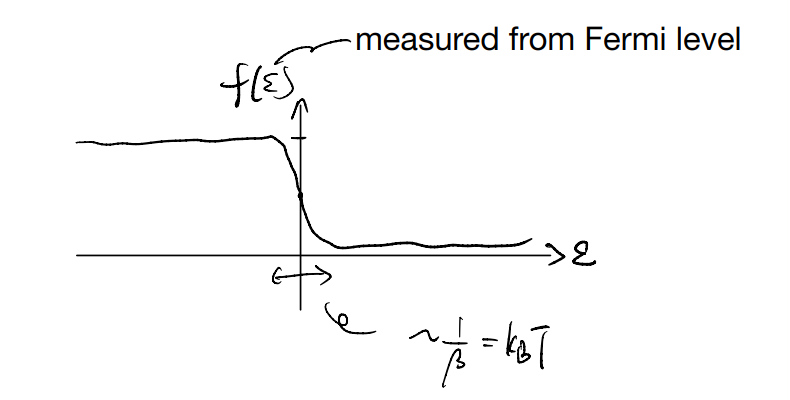
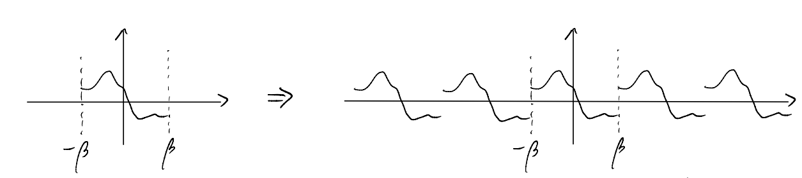

lec22
Note
This is NOT the official course PHYS5340 website yet!
If you are student in this course, always take the lecture notes as the correct one if you find any differences between lecture notes and website contents
If you are just passerby, use the materials below at your own risk. Since the website is still the first version (even alpha version), there could be some typos, incorrect/inaccurate/improper statements.
Note
All materials in this website are based on the course offered at HKUST
Note
As a “casual course”, we provide only general references but not specific ones to the materials introduced
Note
All materials’ copyright in this website are reserved for the course lecturer
Note
Contribution is always welcome. if you find any typo, incorrect/inaccurate/improper statements or necessary references, do not hesitate to
20220427
Topics
Matsubara Green’s functions and frequencies
Periodicity and anti-periodicity in Euclidean time
Goals
Gather the ingredients required for developing the perturbation theory at finite temperature
Reconcile the finite vs zero temperature results on the complex frequency plane
Finite-temperature Green’s functions
As our second step, we consider expectation values for system in thermal equilibrium. In parallel with the zero-temperature discussion, we expect that, ultimately, the perturbation theory will be built upon the various Green’s functions. Here, the natural extension is to simply replace the meaning of \(\langle \cdots \rangle\) from a ground state expectation value to that of the thermal ensemble in the Heisenberg picture:
\[\begin{split}
\begin{align*}
\mathcal{G} _{\sigma \sigma '}\left( \tau -\tau ' \right) &=-\left< \mathcal{T} \left[ \hat{\psi}_{\sigma}\left( \tau \right) \hat{\psi}_{\sigma '}^{\dagger}\left( \tau ' \right) \right] \right> \\
&=-\mathrm{Tr}\left[ e^{-\beta \left( \hat{H}-F \right)}\mathcal{T} \left[ \hat{\psi}_{\sigma}\left( \tau \right) \hat{\psi}_{\sigma '}^{\dagger}\left( \tau ' \right) \right] \right]
\end{align*}
\end{split}\]
where
\[ e^{\beta F}=\frac{1}{\mathcal{Z}}\Rightarrow F=-\frac{1}{\beta}\ln \mathcal{Z} \]
is the free energy, and \(\mathcal{T}\) denotes the (Euclidean) time-ordering operator as usual. Explicitly,
\[ \mathcal{G} _{\sigma \sigma '}\left( \tau -\tau ' \right) =-\Theta \left( \tau -\tau ' \right) \left< \hat{\psi}_{\sigma}\left( \tau \right) \hat{\psi}_{\sigma '}^{\dagger}\left( \tau ' \right) \right> -\zeta \Theta \left( \tau '-\tau \right) \left< \hat{\psi}_{\sigma '}^{\dagger}\left( \tau ' \right) \hat{\psi}_{\sigma}\left( \tau \right) \right> \]
and we add a variable \(\zeta=\pm 1\) to facilitate a unified treatment for both bosons (\(\zeta =+1\)) and fermions (\(\zeta =-1\))
In the above, the LHS suggests that the expression depends only on the difference \(\tau-\tau\prime\). Previously we said that it follows from the time-translation symmetry associated with the static Hamiltonian. With Euclidean time, it will be good to check that explicitly too (for one of the two terms; the other follows similarly):
\[\begin{split}
\begin{align*}
\left< \hat{\psi}_{\sigma}\left( \tau \right) \hat{\psi}_{\sigma '}^{\dagger}\left( \tau ' \right) \right> &=\mathrm{Tr}\left( e^{-\beta \left( \hat{H}-F \right)}e^{\hat{H}\tau}\hat{\psi}_{\sigma}\left( 0 \right) e^{-\hat{H}\tau}e^{\hat{H}\tau '}\hat{\psi}_{\sigma '}^{\dagger}{\color{red} e^{-\hat{H}\tau '}} \right) \\
&=\mathrm{Tr}\left( e^{-\beta \left( \hat{H}-F \right)}e^{\hat{H}\left( \tau {\color{red} -\tau '} \right)}\hat{\psi}_{\sigma}\left( 0 \right) e^{-\hat{H}\left( \tau -\tau ' \right)}\hat{\psi}_{\sigma '}^{\dagger} \right) \\
&=\left< \hat{\psi}_{\sigma}\left( \tau -\tau ' \right) \hat{\psi}_{\sigma '}^{\dagger}\left( 0 \right) \right>
\end{align*}
\end{split}\]
where we assumed the cyclic property of the trace. (If you care about rigor, this is more subtle than is might appear: the Hilbert space is very often infinite dimensional!)
Following the same program (as in the zero-temperature case), we can now consider the relation between the Heisenberg and interaction picture, from which tease out a perturbation theory building upon the unperturbed Hamiltonian.
Let us restrict our attention to \(\tau >0\) (suppressing subscripts)
\[\begin{split}
\begin{align*}
\mathcal{G} \left( \tau \right) &\stackrel{\tau >0}{=}-\mathrm{Tr}\left[ e^{-\beta \left( \hat{H}-F \right)}\hat{\psi}_H\left( \tau \right) \hat{\psi}_{H}^{\dagger}\left( 0 \right) \right] \\
&=\frac{-\mathrm{Tr}\left[ e^{-\beta \hat{H}}\hat{U}\left( \tau \right) ^{-1}\hat{\psi}_I\left( \tau \right) \hat{U}\left( \tau \right) \hat{\psi}_{I}^{\dagger}\left( 0 \right) \right]}{\mathrm{Tr}\left[ e^{-\beta \hat{H}} \right]}
\end{align*}
\end{split}\]
Now we notice that the “thermal” factor of \(e^{-\beta \hat{H}}\) can be absorbed into the S-matrix
\[ \hat{U}\left( \tau \right) =\hat{S}\left( \tau ,0 \right) =\mathcal{T} \left[ e^{-\int_0^{\tau}{d\tau '\hat{V}_I\left( \tau ' \right)}} \right] =e^{\hat{H}_0\tau}e^{-\hat{H}\tau}\]
\[ \Rightarrow \hat{S}\left( \beta ,0 \right) =e^{\beta \hat{H}_0}e^{-\beta \hat{H}}\]
\[ \Rightarrow e^{-\beta \hat{H}}=e^{-\beta \hat{H}_0}\hat{S}\left( \beta ,0 \right) \]
\[\begin{split}
\begin{align*}
\Rightarrow \mathcal{G} \left( \tau \right) &\stackrel{\tau >0}{=}\frac{-\mathrm{Tr}\left[ e^{-\beta \hat{H}_0}\hat{S}\left( \beta ,0 \right) \hat{S}\left( 0,\tau \right) \hat{\psi}_I\left( \tau \right) \hat{S}\left( \tau ,0 \right) \hat{\psi}_{I}^{\dagger}\left( 0 \right) \right]}{\mathrm{Tr}\left[ e^{-\beta \hat{H}_0}\hat{S}\left( \beta ,0 \right) \right]}\\
&=\frac{-\mathrm{Tr}\left[ e^{-\beta \hat{H}_0}\mathcal{T} \left[ \hat{\psi}_I\left( \tau \right) \hat{\psi}_{I}^{\dagger}\left( 0 \right) \hat{S}\left( \beta ,0 \right) \right] \right]}{\mathrm{Tr}\left[ e^{-\beta \hat{H}_0}\hat{S}\left( \beta ,0 \right) \right]}
\end{align*}
\end{split}\]
This is basically Gell-Mann-Low: to make it even more explicit, we define
\[ \left< \cdots \right> _0=\frac{\mathrm{Tr}\left[ e^{-\beta \hat{H}_0}\cdots \right]}{\mathrm{Tr}\left[ e^{-\beta \hat{H}_0} \right]}\]
(note: Mahan chose to not include the bare partition function \(\mathcal{Z} _0=\mathrm{Tr}\left[ e^{-\beta \hat{H}_0} \right] \) in Eq.(3.184))
When the dust settles, we may simply write
\[ \mathcal{G} \left( \tau \right) \stackrel{\tau >0}{=}\frac{-\left< \mathcal{T} \left[ \hat{\psi}_I\left( \tau \right) \hat{\psi}_{I}^{\dagger}\left( 0 \right) \hat{S}\left( \beta ,0 \right) \right] \right>}{\left< \hat{S}\left( \beta ,0 \right) \right> _0}\]
\[ \hat{S}\left( \beta ,0 \right) =\mathcal{T} \left[ e^{-\int_0^{\beta}{d\tau \hat{V}_I\left( \tau \right)}} \right] \]
This, of course, is only one particular expectation value. The more general discussion for any expectation values follows similarly, just like what we have seen for the zero-temperature formulation.
Bare Matsubara Green’s functions
To gain some experience, and also in anticipation of a perturbation theory, let us evaluate the Matsubara Green’s functions for non-interacting fermions and bosons.
First, consider the free fermion Hamiltonian (from last lecture)
\[ \hat{H}_0=\sum_k{\varepsilon _k\hat{c}_{k}^{\dagger}\hat{c}_k}\]
\[\begin{split} \Rightarrow \begin{cases}
\hat{c}_k\left( \tau \right) =e^{-\varepsilon _k\tau}\hat{c}_k\left( 0 \right)\\
\hat{c}_{k}^{\dagger}\left( \tau \right) =e^{\varepsilon _k\tau}\hat{c}_{k}^{\dagger}\left( 0 \right)\\
\end{cases}\end{split}\]
Here, for simplicity we absorb the chemical potential (which affects the Fermi wave vector) into the definition of \(\varepsilon_k\).
\[\begin{split}
\begin{align*}
\Rightarrow \mathcal{G} _0\left( k,\tau \right) &=-\left< \mathcal{T} \left[ \hat{c}_k\left( \tau \right) \hat{c}_{k}^{\dagger}\left( 0 \right) \right] \right> \\
&=-\Theta \left( \tau \right) e^{-\varepsilon _k\tau}\left< \hat{c}_k\left( 0 \right) \hat{c}_{k}^{\dagger}\left( 0 \right) \right> -\Theta \left( -\tau \right) e^{-\varepsilon _k\tau}\left< \hat{c}_{k}^{\dagger}\left( 0 \right) \hat{c}_k\left( 0 \right) \right> \\
&=-e^{-\varepsilon _k\tau}\left[ \Theta \left( \tau \right) \left( 1-f\left( \varepsilon _k \right) \right) +\Theta \left( -\tau \right) f\left( \varepsilon _k \right) \right]
\end{align*}
\end{split}\]
where (TODO, strange subscription below)
\[\begin{split}
\begin{align*}
f\left( \varepsilon _k \right) &=\left< \hat{c}_{k}^{\dagger}\hat{c}_k \right> \\
&=\frac{\mathrm{Tr}\left[ \hat{n}_ke^{-\beta \sum_s{\varepsilon _s\hat{n}_s}} \right]}{\mathrm{Tr}\left[ e^{-\beta \sum_s{\varepsilon _s\hat{n}_s}} \right]}\\
&=\frac{0+e^{-\beta \varepsilon _k}}{1+e^{-\beta \varepsilon _k}}\\
&=\frac{1}{e^{\beta \varepsilon _k}+1}
\end{align*}
\end{split}\]
The discussion for bosons follows in the same way
\[ \hat{H}_0=\sum_k{\omega _k\hat{a}_{k}^{\dagger}\hat{a}_k}\]
\[\begin{split} \begin{cases}
-\partial _{\tau}\hat{a}_k=\left[ \hat{a}_k,\hat{H}_0 \right] =\omega _k\hat{a}_k\\
-\partial _{\tau}\hat{a}_{k}^{\dagger}=\left[ \hat{a}_{k}^{\dagger},\hat{H}_0 \right] =-\omega _k\hat{a}_{k}^{\dagger}\\
\end{cases}\Rightarrow \begin{cases}
\hat{a}_k\left( \tau \right) =e^{-\omega _k\tau}\hat{a}_k\left( 0 \right)\\
\hat{a}_{k}^{\dagger}\left( \tau \right) =e^{\omega _k\tau}\hat{a}_{k}^{\dagger}\left( 0 \right)\\
\end{cases}\end{split}\]
\[\begin{split}
\begin{align*}
\mathcal{G} '\left( k,\tau \right) &=-\left< \mathcal{T} \left[ \hat{a}_k\left( \tau \right) \hat{a}_{k}^{\dagger}\left( 0 \right) \right] \right> \\
&=-e^{-\omega \tau}\left[ \Theta \left( \tau \right) \left< \hat{a}_k\left( 0 \right) \hat{a}_{k}^{\dagger}\left( 0 \right) \right> +\Theta \left( -\tau \right) \left< \hat{a}_{k}^{\dagger}\left( 0 \right) \hat{a}_k\left( 0 \right) \right> \right] \\
&=-e^{-\omega \tau}\left[ \Theta \left( \tau \right) \left( 1+n\left( \omega _k \right) \right) +\Theta \left( -\tau \right) n\left( \omega _k \right) \right]
\end{align*}
\end{split}\]
\[\begin{split}
\begin{align*}
n\left( \omega _k \right) &=\frac{\mathrm{Tr}\left[ \hat{a}_{k}^{\dagger}\hat{a}_ke^{-\beta \hat{H}_0} \right]}{\mathrm{Tr}\left[ e^{-\beta \hat{H}_0} \right]}\\
&=\frac{\sum_{s=0}{se^{-\beta \omega _ks}}}{\sum_{s=0}{e^{-\beta \omega _ks}}}\\
&=\frac{1}{e^{\beta \omega _k}-1}
\end{align*}
\end{split}\]
For bosons, however, it is also typical to consider the Green’s functions associated with
\[ \hat{\phi}_k=\frac{1}{\sqrt{2m\omega _k}}\left( \hat{a}_k+\hat{a}_{-k}^{\dagger} \right) \]
(e.g., for phonons this corresponds to the Fourier transform of the atomic position)
\[\begin{split}
\begin{align*}
\mathscr{D} \left( k,\tau \right) &=-\left< \mathcal{T} \left[ \hat{\phi}_k\left( \tau \right) \hat{\phi}_{-k}\left( 0 \right) \right] \right> \\
&=\frac{-1}{2m\omega _k}\left\{ \Theta \left( \tau \right) \left< \left( e^{-\omega _k\tau}\hat{a}_k+e^{\omega _k\tau}\hat{a}_{-k}^{\dagger} \right) \left( \hat{a}_{-k}+\hat{a}_{k}^{\dagger} \right) \right> \right. \\
&\quad +\left. \Theta \left( -\tau \right) \left< \left( \hat{a}_{-k}+\hat{a}_{k}^{\dagger} \right) \left( e^{-\omega _k\tau}\hat{a}_k+e^{\omega _k\tau}\hat{a}_{-k}^{\dagger} \right) \right> \right\} \\
&=\frac{-1}{2m\omega _k}\left[ \Theta \left( \tau \right) \left( e^{-\omega _k\tau}\left( 1+n\left( \omega _k \right) \right) +e^{\omega _k\tau}n\left( \omega _k \right) \right) +\left( \tau \leftrightarrow -\tau \right) \right]
\end{align*}
\end{split}\]
For both fermions and bosons, we see that the thermal occupation numbers \(f(\varepsilon) \& n(\omega)\) appear, as expected. Since we will eventually think about complex frequencies when we Fourier transform the Matsubara Green’s functions, it will be interesting to consider \(f(\varepsilon)\& n(\omega)\) as a complex function of the single-particle energies.
For instance, consider

While it is a positive and non-singular over real \(\varepsilon\), it can develop more interesting features when understood as a complex function. In particular, we can ask where the poles are
\[ f\left( \varepsilon \right) =\frac{1}{e^{\beta \varepsilon}+1}\]
A pole at \(\varepsilon^*\) if
\[ e^{\beta \varepsilon ^*}+1=0\]
\[ \Rightarrow \varepsilon ^*=i\left( 2n+1 \right) \pi /\beta ,\quad n\in \mathbb{Z} \]
Similarly, for bosons we have
\[ n\left( \omega \right) =\frac{1}{e^{\beta \omega}-1}\]
A pole at \(\omega^*\) if
\[ e^{\beta \omega ^*}-1=0\]
\[ \Rightarrow \omega ^*=i2\pi n/\beta ,\quad n\in \mathbb{Z} \]
We make one curious observation here: the thermal occupation function for fermions and bosons are highly similar, and they both have an evenly spaced series of poles, it’s just that the fermion ones are shifted by \(\pi/\beta\). If we let \(\omega_\beta=\pi/\beta\), then we can conclude the “boson frequencies” are even multiples of \(\omega_\beta\), whereas the “fermion frequencies” are odd multiples.
Euclidean time is a loop
At long last, let’s explore the consequences of the third required modification mentioned in the last lecture, namely, that the temporal direction is now finite.
Let us make two observations before doing the math:
While the Euclidean time is restricted to \(\tau\in\left[0,\beta\right]\), in discussing the Green’s function we allow for \(\tau<0\) under the time-ordering operator. This implies the Green’s function is now defined over the interval \(\tau \in \left[-\beta,\beta\right]\), but at the same time, the negative part is not independent of the positive one (the two related by a switch of operator ordering)
(Recap of discrete Fourier) Given a function defined over a finite interval, we can always choose to repeat it to obtain a periodic function defined over the full range. This extended function has, by definition, a period of \(2\beta\). Correspondingly, its Fourier series only contains frequencies at integer multiple of the fundamental frequency \(\omega_\beta=\frac{2\pi}{2\beta}=\frac{\pi}{\beta}\)

In other words, the Fourier transform of the Matsubara Green’s functions could only contain frequencies which are at integer multiples of \(\omega_\beta\). Furthermore, we have seen a hint from the thermal occupation numbers that bosons and fermions respectively correspond to the even and odd multiples. This is related to observation (1) above, as we now show.
For this purpose, let us consider a somewhat general setup of some (interacting) Hamiltonian \(\hat{H}\). We consider a pair of operators \(\hat{A}\&\hat{B}\) such that the corresponding Matsubara Green’s function reads
\[\begin{split}
\begin{align*}
\mathcal{G} _{AB}\left( \tau \right) &=-\left< \mathcal{T} \left[ \hat{A}\left( \tau \right) \hat{B}\left( 0 \right) \right] \right> \\
&=-\Theta \left( \tau \right) \left< \hat{A}\left( \tau \right) \hat{B}\left( 0 \right) \right> -\zeta _{A,B}\Theta \left( -\tau \right) \left< \hat{B}\left( 0 \right) \hat{A}\left( \tau \right) \right>
\end{align*}
\end{split}\]
where \(\zeta_{A,B}=\pm 1\) encodes whether the two operators are mutually bosonic or fermionic
By observation (1) above, it should suffice to consider only half of the interval and recover the other. Let us focus on
\[ \tau \in \left[ -\beta ,0 \right] \]
\[\begin{split}
\begin{align*}
\mathcal{G} _{AB}\left( \tau \right) &\stackrel{\tau <0}{=}-\zeta _{A,B}\left< \hat{B}\left( 0 \right) \hat{A}\left( \tau \right) \right> \\
&=-\zeta _{A,B}\mathrm{Tr}\left[ e^{-\beta \left( \hat{H}-F \right)}\hat{B}\left( 0 \right) e^{\tau \hat{H}}\hat{A}\left( 0 \right) e^{-\tau \hat{H}} \right] \\
&\Downarrow \text{cyclic}\; \text{trace}\\
&=-\zeta _{A,B}e^{\beta F}\mathrm{Tr}\left[ e^{\tau \hat{H}}\hat{A}\left( 0 \right) {\color[RGB]{0, 0, 240} e^{-\tau \hat{H}}e^{-\beta \hat{H}}}\hat{B}\left( 0 \right) \right] \\
&=-\zeta _{A,B}e^{\beta F}\mathrm{Tr}\left[ e^{-\beta \hat{H}}\left( e^{\left( \tau +\beta \right) \hat{H}}\hat{A}\left( 0 \right) {\color[RGB]{0, 0, 240} e^{-\left( \tau +\beta \right) \hat{H}}} \right) \hat{B}\left( 0 \right) \right] \\
&=-\zeta _{A,B}\left< \hat{A}\left( {\color{red} \tau +\beta } \right) \hat{B}\left( 0 \right) \right>
\end{align*}
\end{split}\]
\[ {\color{red} \left( \tau +\beta \right) \in \left[ 0,\beta \right] }\]
This, indeed, recovers the Green’s function in the segment \(\tau \in \left[ 0,\beta \right]\), but with a possible “twist” \(\zeta_{A,B}\). As such, we conclude
\[ \mathcal{G} _{AB}\left( \tau +\beta \right) =\zeta _{A,B}\mathcal{G} _{AB}\left( \tau \right) \]
In particular, we could check that
\[ \mathcal{G} _{AB}\left( \tau +2\beta \right) =\zeta _{A,B}\mathcal{G} _{AB}\left( \tau +\beta \right) =\zeta _{A,B}^{2}\mathcal{G} _{AB}\left( \tau \right) =\mathcal{G} _{AB}\left( \tau \right) \]
So, indeed, this defines an extended function over \(\tau\in\mathbb{R}\) which is periodic in \(2\beta\). Yet, it is perhaps more natural (and popular) to think of the Matsubara Green’s function as one with “period” \(\beta\), but subjected to
periodic boundary condition \(\mathcal{G}_{AB}\left( \tau +\beta \right) =\mathcal{G}_{AB}\left( \tau \right)\) for bosonic operators with \(\zeta _{A,B}=1\)
anti-periodic boundary condition \(\mathcal{G}_{AB}\left( \tau +\beta \right) =-\mathcal{G}_{AB}\left( \tau \right)\) for fermionic operators with \(\zeta _{A,B}=-1\)